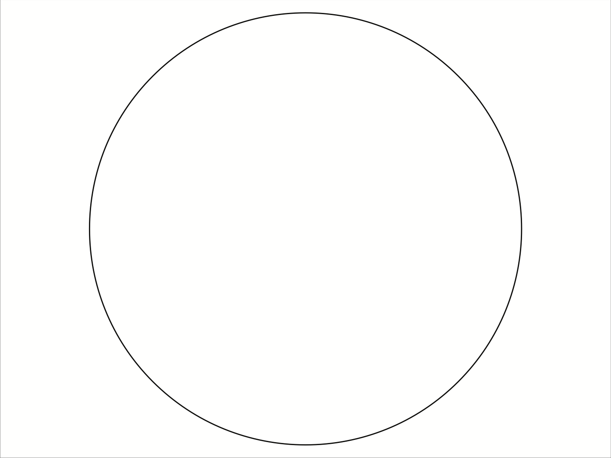
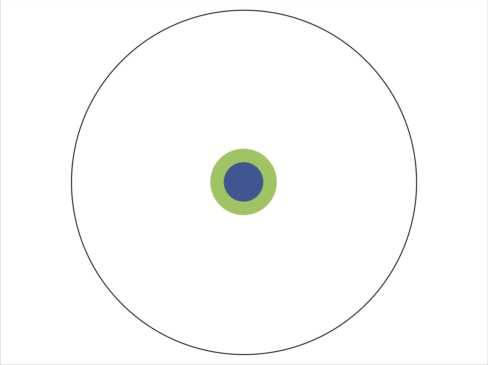
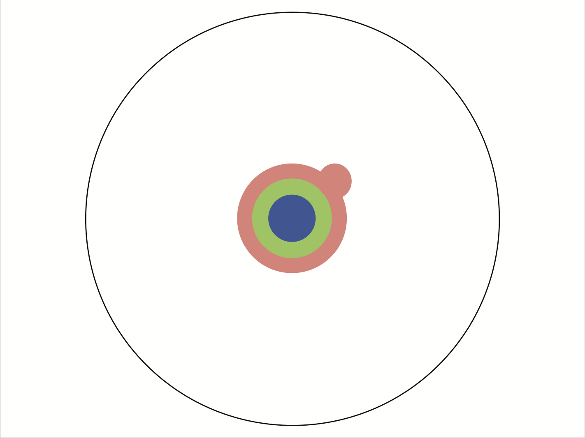
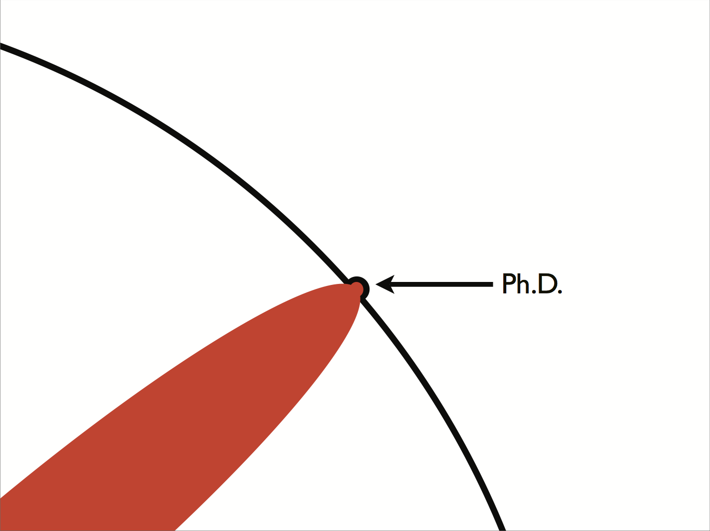
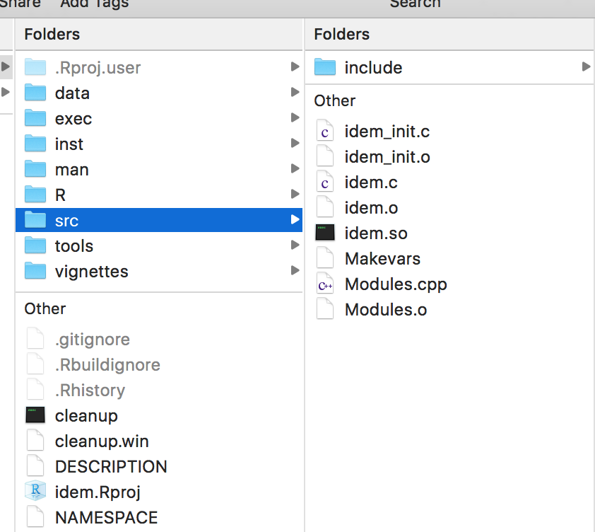

Development of Statistical Software with A Case Study
IFRIT, 2017
Created: 2017-07-19 Wed 17:23
Team
- Zhong Wang
- Chenguang Wang (cwang@gateofsci.com)
Introduction
Guide to become a researcher







Steps of applied research
- Identify a problem
- Hypothesis
- Experiments / Simulation studies
- Conclusion
- Applications
Typical product

Challenges
- Difficult to understand the algorithm
- Difficult to understand the command line mode
- Platform dependent
- Rely on legacy system
- …
Motivation
We believe that scientists' pioneering achievements can be better delivered to people by user-friendly, customizable and extensible software.
Software development

Overall scheme

Case Study: Background
Motivation
- Consider a randomized clinical study
- Outcomes scheduled to be measured at pre-specified time points after randomization
- Goal: To evaluate the efficacy of a treatment
- Issue: Clinical evaluations unobserved due to
- lost to follow up
- withdraw of consent
- out-of-window visit
- death
Notation
- \(T=0,1\): treatment assignment
- \(Y_0\): baseline measure at \(t_0\)
- \(Y_1, \ldots, Y_K\): post-randomization outcomes at \(t_1, \ldots, t_K\)
- \(L\): survival time
- \(A_k=I(L>t_k)\): survival status at \(t_k\)
- \(Z=g(Y_0,\ldots,Y_K)\): primary functional endpoint
- e.g. \(Z=Y_K\), \(Z=Y_K-Y_0\)
- only defined when \(A_K=1\)
- For subjects alive at the end of the study (\(A_K=1\))
- \(\tau_k\): missingness indicator of \(Y_k\) (1: observed, 0: missing)
- \(S=(\tau_1, \ldots, \tau_K)\): missing pattern
- \(Y_{obs}=\{Y_k: \tau_k=1, k \geq 1\}\): observed functional outcome
- \(Y_{mis}=\{Y_k: \tau_k=0, k \geq 1\}\): missing functional outcome
- \(X\): baseline covariates
- \(\overline{Y}_k\): \((Y_1,\ldots,Y_k)\)
Issues
- Missing data
- Death
Proposal

Steps
Imputation
- Impute missing data for survivors
- Benchmark assumption \[f(Y_{mis} | A_K=1,Y_{obs}, Y_0, X, T,S=s) = f(Y_{mis} | A_K=1, Y_{obs}, Y_0, X, T, S=\mathbf{1}) \qquad \forall s \neq \mathbf{1} \]
Rank all subjects
- Both alive
- \(Z_i > Z_j\): subject \(i\) ranked better than subject \(j\)
- \(Z_i=Z_j\): subjects \(i\) and \(j\) ranked the same
- Both dead
- \(L_i > L_j\): subject \(i\) ranked better than subject \(j\)
- \(L_i=L_j\): subjects \(i\) and \(j\) ranked the same
- Alive + Dead
- subject alive ranked better than subject dead
Statistical inference
- Based on the parameter \[\theta = P(U_i < U_j) - P(U_i > U_j) \]
- Hypothesis testing
Sensitivity analysis
- Benchmark assumptions (CCMV) untestable
- Sensitivity analysis essential to evaluate the robustness of inferences to deviations from benchmark assumptions
- Assumptions \[f(Y_{mis} | A_K=1, Y_{obs}, Y_0, X, T=t,S=s) \propto \exp \{\beta_{t} Z\} f(Y_{mis} | A_K=1, Y_{obs}, Y_0, X, T=t, S=\mathbf{1})\]
Simulation Study
- Conduct simulation study to evaluate
- if the sensitivity analysis strategy works
- how the deaths and missing data affect the final conclusions
Application
- Apply the proposed method to a Phase III cancer drug clinical study submitted the FDA
Product

Case Study: Component Software
Raw code
R code
##table of missing pattern
get.mis.table <- function(data.all, duration, vtrt, vsurv, voutcome, trt.len=NULL) {
a.trt <- get.trt(data.all[,vtrt]);
mis.pat <- get.miss.pattern(length(voutcome));
if (is.null(trt.len)) {
trt.len <- paste(toupper(vtrt), "=", a.trt, sep="");
}
rst <- NULL;
for (i in 1:length(a.trt)) {
subg <- data.all[which(a.trt[i] == data.all[,vtrt]),
c(vsurv, voutcome)];
nsub <- nrow(subg);
cur.alive <- subg[which(subg[,vsurv] > duration),voutcome];
n.dead <- nsub-nrow(cur.alive);
cur.y <- !is.na(cur.alive);
inx.y <- table(1+get.compose(cur.y));
n.p <- rep(0, nrow(mis.pat));
names(n.p) <- rownames(mis.pat);
n.p[names(inx.y)] <- inx.y;
char.rst <- sapply( c(n.dead, n.p), function(x) { sprintf("%i(%5.2f%%)", x, 100*x/nsub)});
char.rst <- c(char.rst, nsub);
rst <- cbind(rst, char.rst);
}
rst <- cbind(rbind("", mis.pat, ""), rst);
colnames(rst) <- c(paste(voutcome, "Observed", sep=" "), trt.len);
rownames(rst) <- c("Deaths on study",
paste("S=", 1:nrow(mis.pat), sep=""),
"Total");
rst
}
C code
//order two subjects
void rankij(double *s1, double *z1, double *s2, double *z2,
double *duration, double *cuts, double *cutz, int *rst) {
double tmp;
//both alive
if ((*s1 > *duration) && (*s2 > *duration)) {
tmp = *z1 - *z2;
if (tmp > *cutz) {
*rst = 1;
} else if (tmp < -*cutz) {
*rst = -1;
} else {
*rst = 0;
}
} else if ((*s1 <= *duration) && (*s2 <= *duration)) {
tmp = *s1 - *s2;
if (tmp > *cuts) {
*rst = 1;
} else if (tmp < -*cuts) {
*rst = -1;
} else {
*rst = 0;
}
} else {
if (*s1 > *duration) {
*rst = 1;
} else {
*rst = -1;
}
}
}
STAN code
data {
int NY; //total no. y
int NOBS; //no of observed y
vector[NOBS+1] YOBS; //add dummy y to handle nobs=0
int NX; //no. covariates
vector[NX] X; //covariates
matrix[NY, NX+3] COEF; //coefficents 1st column is sigma
int IMIS[NY];
int INX[NY];
//residuals
int ASSUMENORMAL;
int NRES;
matrix[NRES,NY] RESIDUAL;
real H[NY];
}
transformed data {
int NMIS;
real MU[NY];
real SIGMA[NY];
NMIS = NY - NOBS;
for (i in 1:NY) {
SIGMA[i] = COEF[i, 1];
MU[i] = COEF[i, 2];
//covariates
for (k in 1:NX) {
MU[i] = MU[i] + X[k] * COEF[i, 3+k];
}
}
}
parameters{
vector[NMIS] YMIS;
}
model {
YMIS ~ cond(YOBS, COEF, NY, MU, SIGMA, IMIS, INX, ASSUMENORMAL, NRES, RESIDUAL, H);
}
Difficulty
- It is almost impossible to share the code with others
- No documentation
- No guidance
- Complicated configuration
- Need to know STAN
R package
- Re-Organize the functions
- Add detailed documentation
- Incorporate the C code
- Incorporate the STAN code
- Provide examples
Development
Re-Organized code
#' Treatment effect estimation
#'
#' Estimate treatment effect and median of the composite endpoint from using
#' imputed data
#'
#' @inheritParams imPlotCompleters
#' @inheritParams imPlotImputed
#'
#' @param quantiles Quantiles of the composite endpoint to be reported
#'
#' @param ... Options for ranking subjects using the composite endpoint
#' \describe{
#' \item{cut.z}{Clinically meaningful difference in the functional outcome}
#' \item{cut.surv}{Clinically meaningful difference in survival time}}
#'
#' @return A class \code{IDEM.RST} list contains
#' \describe{
#' \item{list.var}{List of parameters}
#' \item{theta}{A dataset with columns \code{Delta0}, \code{Delta1}, \eqn{\hat{\theta}}}
#' \item{quantiles}{ A dataset with columns \code{Delta}, \code{Trt}, \code{Quantiles}}
#' \item{survivor}{A dataset for survivors with columns \code{Delta0}, \code{Delta1}, \code{Mean0},
#' \code{Mean1}, \code{Diff}}}
#'
#' @examples
#' \dontrun{
#' lst.var <- list(trt="TRT", surv="SURV", outcome=c("Y1","Y2"), y0=NULL,
#' endp=c("Y2"), unitTime="days",
#' trt.label = c("UC+SBT", "SAT+SBT"),
#' cov=c("AGE"), endfml="Y2", duration=365, bounds=c(0,100));
#' rst.fit <- imFit(abc, lst.var);
#' rst.imp <- imImpAll(abc, rst.fit, lst.var, deltas=c(-0.25,0,0.25),
#' normal=TRUE, iter=300, n.imp=2, thin=10, p.scale=10);
#' rst.est <- imEstimate(rst.imp, quantiles=c(0.25,0.5,0.75));}
#'
#' @export
#'
imEstimate <- function(imp.rst,
quantiles=0.5,
...) {
if (is.null(imp.rst))
return(NULL);
stopifnot(any(class(imp.rst) == get.const("IMP.CLASS")));
lst.var <- imp.rst$lst.var;
imp.data <- imp.rst$complete;
deltas <- imp.rst$deltas;
n.imp <- imp.rst$n.imp;
vtrt <- lst.var$trt;
duration <- lst.var$duration;
vsurv <- lst.var$surv;
##trt arms
atrt <- sort(unique(imp.data[, vtrt]));
##not imputed subjects
sub.noimp <- imp.data[is.na(imp.data$IMP),,drop=FALSE];
ready.noimp <- get.data.ready(sub.noimp, lst.var, atrt);
rst.median <- NULL;
rst.rank <- NULL;
for (i in 1:n.imp) {
tmp.lst <- rep(list(NULL), length(deltas));
for (j in 1:length(deltas)) {
cur.data <- subset(imp.data, imp.data$DELTA == deltas[j] & imp.data$IMP == i);
cur.ready <- get.data.ready(cur.data, lst.var, atrt);
tmp.lst[[j]] <- rep(list(NULL), length(atrt));
for (k in 1:length(atrt)) {
tmp.lst[[j]][[k]] <- rbind(ready.noimp[[k]], cur.ready[[k]]);
c.med <- get.median(tmp.lst[[j]][[k]], duration, quantiles=quantiles, ...);
rst.median <- rbind(rst.median,
cbind(i, deltas[j], atrt[k], c.med));
}
}
for (t1 in 1:length(deltas)) {
for (t2 in 1:length(deltas)) {
cur.rank <- c.rankall(tmp.lst[[t1]][[1]],
tmp.lst[[t2]][[2]],
duration, ...);
rst.rank <- rbind(rst.rank,
c(i, deltas[t1], deltas[t2], cur.rank));
}
}
}
colnames(rst.median) <- c("Imputation", "Delta", "TRT", "Q", "QuantSurv", "QuantY");
colnames(rst.rank) <- c("Imputation", "Delta0", "Delta1", "Theta");
##median of median
dfmedian <- data.frame(rst.median);
dfmedian$Quant <- get.comp(dfmedian$QuantY, dfmedian$QuantSurv, lst.var$duration);
dfmedian <- sqldf('select * from dfmedian order by Delta, Trt, Q, Quant');
inx.median <- ceiling(n.imp/2);
median.median <- dfmedian[seq(inx.median, nrow(dfmedian), by=n.imp),
c("Delta", "TRT", "Q", "QuantY", "QuantSurv")];
inx.2 <- which(median.median$QuantSurv <= lst.var$duration);
if (length(inx.2) > 0) {
median.median[inx.2, "QuantY"] <- NA;
median.median[-inx.2, "QuantSurv"] <- NA;
}
##average rank
dfrank <- data.frame(rst.rank);
avg.rank <- sqldf('select Delta0, Delta1, avg(Theta) as Theta
from dfrank group by Delta1, Delta0');
##survivor functional means
dalive <- imp.data[imp.data[,vsurv] > duration, , drop=FALSE];
rst.survivor <- NULL;
if (nrow(dalive) > 0) {
##there exist survivors
endp <- get.const("TXT.ENDP");
txt.sql <- paste("select delta, trt, avg(endp) as Mean",
"from (select distinct delta, ", vtrt, " as trt, ID,",
"avg(", endp, ") as endp",
"from dalive group by delta, ID) group by delta, trt",
sep=" ");
survtrt <- sqldf(txt.sql);
survtrt.t0 <- survtrt[seq(1, nrow(survtrt)-1, 2), c("delta", "Mean")];
survtrt.t1 <- survtrt[seq(2, nrow(survtrt), 2), c("delta", "Mean")];
ndelta <- nrow(survtrt.t0);
rst.survivor <- cbind(survtrt.t0[ rep(1:ndelta, each = ndelta),],
survtrt.t1[ rep(1:ndelta, ndelta),]);
colnames(rst.survivor) <- c("Delta0", "Mean0", "Delta1", "Mean1");
rst.survivor <- data.frame(rst.survivor);
rst.survivor$Diff <- rst.survivor$Mean1 - rst.survivor$Mean0;
}
rst <- list(lst.var=lst.var,
quantiles=median.median,
theta=avg.rank,
survivor=rst.survivor,
raw.theta=rst.rank,
raw.quantiles=rst.median);
class(rst) <- get.const("RST.CLASS");
rst
}
Incorporate external code

Final Product
- A single
tarfile - Can be download and installed from online for
- 32-bit Windows
- 64-bit Windows
- Mac OS
- Unix
- With detailed help file
Script Mode Demo
install.packages("idem");
require(idem);
head(abc);
help("idem-parameters", package=idem);
lst.var <- list(trt = "TRT", surv = "SURV", outcome = c("Y1","Y2"),
y0 = NULL, endp = c("Y2"), unitTime = "days",
trt.label = c("UC+SBT", "SAT+SBT"), cov = c("AGE"), endfml = "Y2",
duration = 365, bounds = c(0,100));
is.null(imChkPars(abc, lst.var));
imMisTable(abc, lst.var);
imPlotCompleters(abc, lst.var);
imPlotMisPattern(abc, lst.var);
imPlotSurv(abc, lst.var);
rst.fit <- imFitModel(data.all = abc, lst.var = lst.var);
rst.mixing <- imImpSingle(abc[1,], rst.fit,
chains = 4, iter = 2000, warmup = 1000);
rst.imp <- imImpAll(abc, rst.fit, deltas = seq(-0.2,0.2,0.05),
n.imp = 5, normal = TRUE, chains = 4, iter = 5000, warmup = 1000);
Question
- Is this enough?
- What about users who do not know R?
Case Study: User-Friendly Software
Graphical User Interface
- Many options
- Web-Based GUI is platform independent
Shiny
- Allows statisticians to develop web pages without knowledge of HTML, Java Script, CSS, etc.
- Allows to fully use existing statistical code
- Optimized for computation efficiency
- Ideal for interactive applications
Plan
- Build a web application based on the component software
- Develop web pages and server files
- Deploy the application on web
Web Pages
list(
msg.box("On this page, you will specify inputs for the imputation and estimation procedures."),
wellPanel(h4("General Imputation Settings"),
fluidRow(
column(3,
h6("Number of imputed datasets"),
sliderInput("inNImp", label = "", value=10, min=1, max=20, step=1),
h6("Normality assumption"),
radioButtons(inputId="inNorm", label="", c("Yes"=1, "No"=0))
),
column(3,
h6("Number of bootstrap samples"),
sliderInput(inputId = "inNbs", label = "",
value = 100, min = 5, max = 1000, step=1),
h6("Random seed"),
numericInput(inputId="inSeed", label="", value=0, min=0)),
column(3,
h6("Number of Cores (Parallel Bootstrap)"),
sliderInput("inNcores", label = "", value = 1, min = 1,
max = (parallel::detectCores()-1), step = 1))
)),
wellPanel(
h4("MCMC Paramters"),
msg.box("Specify parameters for Bayesian posterior sampling. The target metropolis
acceptance rate and initial step-size are options for advanced users to
control STAN sampler's behavior. "),
fluidRow(
column(3,
h6("Number of iterations"),
sliderInput(inputId = "mcmciter", label = "",
value = 2000, min = 200, max = 20000, step=100),
h6("Number of burn-in"),
sliderInput("mcmcburnin", label = "", value=1000, min=100, max=20000, step=100)
),
column(3,
h6("Number of thinning"),
sliderInput(inputId = "mcmcthin", label = "", value=2, min=1, max=50, step=1),
h6("Number of chains"),
sliderInput("mcmcchain", label = "", value=4, min=2, max=10, step=1)
),
column(3,
h6("Target Metropolis Acceptance Rate"),
sliderInput("mcmcdelta", label = "", value=0.95, min=0.05, max=1, step=0.05),
h6("Initial Step-size"),
sliderInput("mcmcstepsize", label = "", value=1, min=0.05, max=5, step=0.05)
##h6("Algorithm"),
##radioButtons('mcmcalg', '', c('NUTS', 'HMC', "Fixed_param"))
))),
wellPanel(h4("Sensitivity Parameters and Additional Quantile Output"),
fluidRow(
column(3,
h6("Imputation sensitivity parameters (separate by comma).
Default values set such that the range of the sensitivity
parameters is equal to one-fourth standard deviation of
the distriubtion of functional endpoints among subjects
who do not require their data to be imputed."),
textInput("inSensp", label="", value = get.sd.endp(outVar='ImpSens'))),
column(3,
h6("The median of the composite endpoint for each treatment
will be computed. Below enter additional percentiles of
the composite variable you would like to obtain."),
textInput("inExtras", label="", value=c("25,75"))),
column(3,
h6('SACE Sensitivity Parameter (separate by comma,
values <= 0 are valid). Default values set such that
the range of the sensitivity parameter ranges from 0 to
minus one-half standard deviation of the distribution of
functional endpoints among subjects who do not require
their data to be imputed.'),
textInput("inSACE", label="", value=get.sd.endp(outVar='SACE')))
)),
wellPanel(
h4("Convergence Checking"),
msg.box("Randomly select a subject and check the MCMC sampling convergence"),
actionButton("btnConverge", "Check Convergence", style="info"),
uiOutput('uiImpConv')
)
);
Server files
output$outTblBootQuantiles <- renderTable({
if (0 == input$btnBoot)
return(NULL);
rst <- get.rst.overall();
rst$quantiles;
}, include.rownames=TRUE,
caption = 'Table: Quantiles of Compositve Variable',
caption.placement = getOption("xtable.caption.placement", "top"),
caption.width = getOption("xtable.caption.width", NULL));
## Contour plots
output$outBootContourRank <- renderPlot({
if (0 == input$btnBoot)
return(NULL);
rst <- get.rst.overall();
imPlotContour(rst, plot.title="");
},
width=500,
height=500,
bg="transparent");
##--------------------------------------
##----------Report----------------------
##--------------------------------------
output$uiReport <- renderUI({
if (is.null(get.data())) {
msg.box("Please upload data first.", "warning");
} else if (-1 == userLog$model) {
msg.box("Please validate model first.", "warning");
} else {
wellPanel(h4('Download the analysis report'),
radioButtons('format', '', c('PDF', 'HTML', 'Word')),
downloadButton('btnDload'))
}
})
output$btnDload <- downloadHandler(
filename=function() {
paste('report_',
format(Sys.time(), "%m%d%Y%H%M%S"),
'.',
switch(input$format,
PDF = 'pdf',
HTML = 'html',
Word = 'docx'
),
sep="")
},
content=function(file) {
out <- rmarkdown::render('report/report.Rmd',
switch(input$format,
PDF = rmarkdown::pdf_document(),
HTML = rmarkdown::html_document(),
Word = rmarkdown::word_document()
));
bytes <- readBin(out, "raw", file.info(out)$size);
writeBin(bytes, file);
})
Demo
Appendix
- Demo of a spatial software http://olssol2.shinyapps.io/icemr
Scientific Software
Overall Scheme
- Your work
- Built upon many existing scientific work (e.g. theories, experiments)
- Component software
- May incorporate many other component software packages
- User friendly software
- Supported by powerful server system
Our Tasks
Synthesize and develop code
- R
- C/C++
- Python
- SAS
- Shell script
Develop Web Gateway Portal
- Shiny+R (Data visualization)
- Airavata (Data computing)
Develop front-end software
- Web application
- Stand-alone application
- Mobile application
High-Performance computing
- Multi-core Parallel
- GPU
- XEON PHI
- Cloud computation
Machine learning
- Bayesian non-parametric
Summary
Why do we need scientific software?
- Necessary to deliver the work to people
- Allow scientists to focus on the real work
- Reproducible research
Our Goal
- Imagine there is a day
- your idea can be easily implemented with a user-friendly interface on a cloud-based computing platform to utilize their latest CPU/GPU and parallel software programming technology
- Your data, should it be tables, medical images, or real-time photos, can be easily shared with other scientists
- Just a couple of clicks, your work is delivered to people, ordinary people, seamlessly.
- We are here to make it happen.